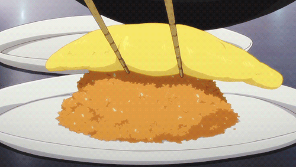

Omurice

Omurice(Japanese Omelette Rice)
Omurice is a popular dish that orginated from Japan. The base of the dish consists of fried rice, that is covered by a runny omelette.
Ingredients
- Cooked white rice (preferrably day-over rice)
- 3 eggs
- Onions
- Oil
- Butter
- Salt
- Pepper
- Soy sauce
- Ketchup
Steps
- Add oil to a heated pan. Sautè onions within the pan.
- Add butter to the pan, alongside the cooked white rice.
- Season the cooked white rice with salt, pepper, and soy sauce.
- Pour the rice into the rice molder.
- Mix eggs in a bowl then pour onto hot pan.
- Stir the eggs quickly and start forming into an omelette shape.
- Lastly place the omelette over the rice and slice through the middle.